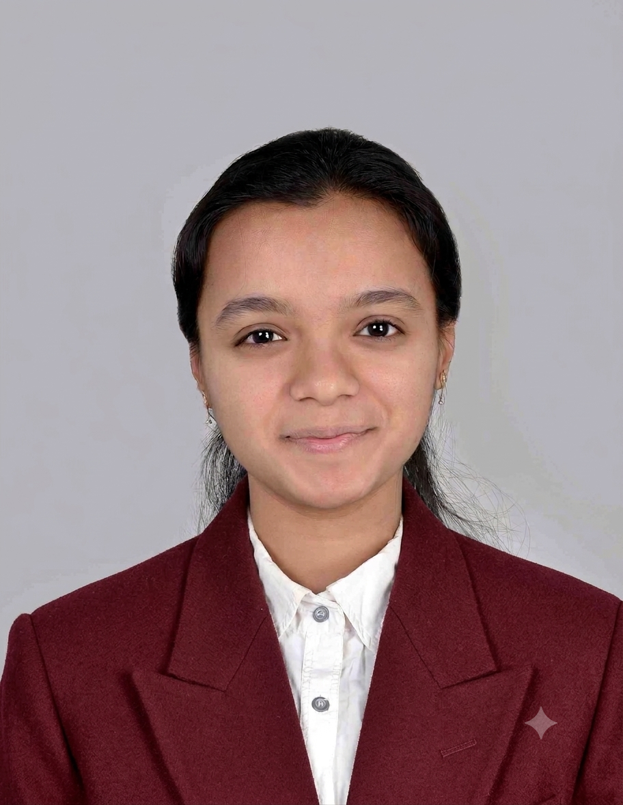

NFHS-6 Has Harmonised Away Data India Still Needs
Opinion writing on the implications of harmonisation for the data India needs to understand health and social outcomes.
Read the piece ↗Department of Humanities & Social Sciences · Indian Institute of Technology Tirupati
Ph.D. Scholar · Public Policy · Governance · Gender Research
I am an analytical public policy researcher working at the intersection of gender, urban local governance, political institutions and evidence-based public policy, with a growing focus on quantitative and computational approaches to governance research.

Researching institutions. Understanding representation. Advancing evidence-based public policy.
I am Twisha Mehta, a Ph.D. Scholar at the Indian Institute of Technology Tirupati with an interdisciplinary academic background spanning political science, public policy, gender, urban local governance and quantitative research.
My doctoral research focuses on Gender and Urban Local Body (ULB) Governance Frameworks, examining how institutional structures shape gender, political representation and participation within local governance. My broader research interests include women in political institutions, public policy, policy implementation, political economy, institutional analysis and computational social science.
My research asks how institutional design shapes representation — and how evidence can help us understand governance more precisely.
I completed my B.A. (Hons.) in Political Science at Kamala Nehru College, University of Delhi, and pursued a Master of Public Policy at IIT Tirupati. My postgraduate dissertation examined women as policymakers in Vadodara, providing an important foundation for my continuing work on gender and governance.
I am interested in research collaborations involving gender, governance, political institutions, urban local government, public policy, quantitative research and computational approaches to social science.

Gender, governance, public policy and computational social science.
My research agenda brings together institutional analysis, public policy research and quantitative/computational approaches to understand representation, governance and social outcomes.
Gender, representation and participation within governance institutions.
Institutional frameworks, local government and city-level policy processes.
Women’s representation, participation and decision-making in formal institutions.
Policy implementation, institutional reform, evidence synthesis and policy analysis.
Data analysis, impact evaluation, city-level budget analysis and evidence-based research.
Computational and data-driven approaches to political and governance research.
From political science and public policy to doctoral research on gender and urban governance.
Research focus: Gender and Urban Local Body (ULB) Governance Frameworks.
CGPA 9.08. Training in policy implementation, data analysis and impact evaluation; dissertation on Women as Policymakers in Vadodara.
CGPA 7.2. Academic grounding in Indian polity, foreign policy and political theory.
Legislative research, policy analysis, human-rights research, consulting and survey-based research.
Coordinate academic and policy-oriented events; contribute to planning, communication and student engagement.
Conducted legislative and policy research on governance frameworks and constituency development initiatives; contributed to data-driven policy research.
Participated in interactive sessions and group projects focused on human-rights issues and institutional understanding.
Completed the Introductory Course in Political Consulting (ICPC) and worked on policy briefs, manifesto development and constituency-level political analysis.
Conducted research on Cyberstalking in India: A Study of IPC Section 354D, engaging with legal, social and policy dimensions.
Conducted policy research and contributed to three published research papers covering foreign policy, legal issues and political analysis.
Conducted survey activities covering the Gujarat Assembly, Delhi MCD, Tripura, Meghalaya and Karnataka elections.
Methods, analytical tools and professional capabilities.
Selected publications, working papers, manuscripts under review and conference presentations.
Selected opinion and policy writing, arranged from the most recent material available in the portfolio.
Opinion writing on the implications of harmonisation for the data India needs to understand health and social outcomes.
Read the piece ↗Co-authored with S. P. Surya and J. Addepalli.
Read the piece ↗Co-authored with A. K. Pandey.
Read the piece ↗Public-facing policy writing on elder care and the policy architecture around ageing.
Read the piece ↗Writing on the Mahakumbh Mela through the lens of sustainable development.
Read the piece ↗Selected academic, cultural and public-engagement distinctions listed in the CV.
Kamala Nehru College Youth Parliament, 2023.
Bharatnatyam, 2019.
Maximum Artists Tribute to Mahatma Gandhi, 2021.
Dedicated slots for the photographs you will add from the IIT Tirupati poster presentation, IASP–ISEC conference and IIM Kozhikode workshop.


To add more photographs, duplicate any <figure> block and change the image filename, alt text, title and event details.
I welcome conversations around gender and governance, urban local government, public policy, research collaboration, academic presentations and interdisciplinary methods.
Download my CV